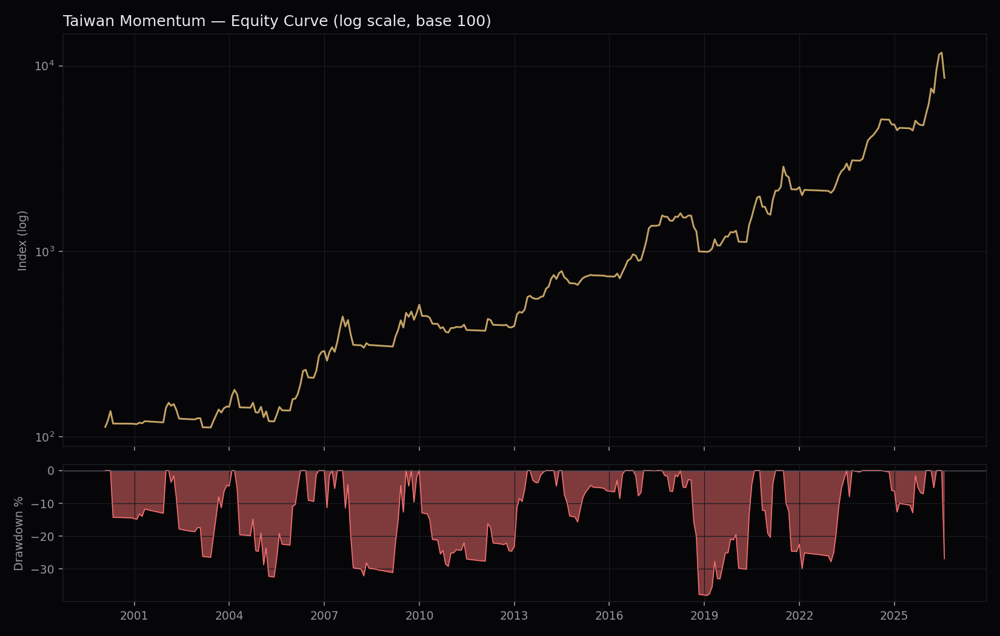

A momentum strategy on the Taiwan Stock Exchange, built with the same lookahead-free engine and data-quality discipline as our Canada and UK strategies. Research stage — not yet a live signal.

Neither the 999999.9999 sentinel bug (Canada, UK) nor scattered per-company bad ticks were the dominant issue here. A full scan of the raw 2000–2026 universe found 989 extreme (>+300%/<−85%) monthly ticker-returns across 211 tickers — concentrated on a small number of specific calendar dates where up to 121 unrelated tickers spiked on the exact same day and reverted the next trading day (e.g. 2000–05–06, 05–20, 06–03, 06–17). That pattern — many unconnected companies, one bad day, clean reversal — points to a data-pipeline snapshot error on those specific dates, not a per-company corporate-action or reporting issue.
A single-day despike (detect a >4x price jump that reverts to <0.3x the next trading day, or the mirror crash-and-recover case) cut the extreme-event count from 989 to 98 — a 91% reduction — using the exact same bounded-ffill mechanism already in the engine for delisted names. Half of the residual 98 events still sit inside the top-50%-by-mcap universe on average, so this isn't a complete cleanup, but it's the difference between an unusable backtest and a plausible one.
Verified directly against the real backtest engine which corrupted returns actually reached a held position — found one that mattered. Of 3 flagged ticker-months, 2 were the same name (2499): roughly 15% of its entire 26-year price history alternates between two unrelated price levels (≈4.1 and ≈200–250) scattered across the whole period, not a single bad day the despike could catch — this looks like two different instruments merged under one data file, not a corporate action. Its fake +5142.7% single-month return (capped to +300% by the engine's existing sanity cap before this fix) still single-handedly drove nearly all of one month's published +19.7% return at 6.7% portfolio weight. Ticker excluded entirely; headline numbers above already reflect this (CAGR 18.74%→18.25%, Sharpe 0.601→0.589 — a modest correction, since the existing cap had already bounded the worst of the damage, but the exclusion is the right fix, not the cap alone). The one remaining flagged event (ticker 5531, −99.2% in Jan 2005) is a genuine gradual multi-month collapse (331→3.29 over ~4 months, smooth decline) — kept as a real momentum-strategy risk, not a data bug.
No regime filter, no fundamental filter, top 15, swept jointly.
| Config | Sharpe | Sortino | CAGR | MaxDD |
|---|---|---|---|---|
| 9M skip 1, mcap top90% | 0.31 | 0.51 | +13.7% | −69.8% |
| 12M skip 0, mcap top90% | 0.29 | 0.48 | +13.7% | −68.9% |
| 9M skip 1, mcap top80% | 0.29 | 0.47 | +12.9% | −70.1% |
| 9M skip 0, mcap top50% | 0.25 | 0.39 | +11.8% | −77.3% |
| 6M skip 1, mcap top90% | 0.22 | 0.35 | +10.7% | −82.0% |
Sharpe is uniformly weak (0.2–0.3) and MaxDD brutal (−69% to −82%) at this stage — expected and by design: Phase 1 is deliberately unprotected, matching the same pattern seen in the Canada/UK research (before their own regime filters were added). The full 35-combination grid is in the underlying data file; 9M/skip-1 at a loose mcap floor is the consistent winner across the top of the table.
9M/skip-1, mcap top90% fixed, sweeping the ^TWII moving-average window.
| MA window | Sharpe | Sortino | CAGR | MaxDD |
|---|---|---|---|---|
| MA75 (final config) | 0.60 | 1.08 | +18.4% | −37.8% |
| MA50 | 0.53 | 0.93 | +16.4% | −50.5% |
| MA100 | 0.44 | 0.75 | +14.4% | −42.9% |
| MA200 | 0.24 | 0.39 | +9.4% | −47.7% |
| MA150 | 0.21 | 0.34 | +8.5% | −47.8% |
Regime is doing the heavy lifting here. Adding MA75 alone roughly doubles Sharpe (0.31→0.60) and nearly halves MaxDD (−70%→−38%). MA75 also won on Canada's own regime sweep — the same window dominating in two independently-built, differently-sourced markets is a modest point in favor of it not being a curve-fit artifact of either dataset individually.
9M/skip-1, mcap top90%, MA75 fixed. All four filters used in the Canada study, tested here too:
| Filter | Sharpe | Sortino | CAGR | MaxDD |
|---|---|---|---|---|
| None (final config) | 0.60 | 1.08 | +18.4% | −37.8% |
| GrossProfit(TTM)>0 | 0.55 | 0.99 | +16.1% | −38.1% |
| NetIncome(TTM)>0 | 0.54 | 0.98 | +16.0% | −39.9% |
| ROE>0 | 0.53 | 1.02 | +17.9% | −42.0% |
| EBIT(TTM)>0 | 0.52 | 0.96 | +15.8% | −39.2% |
Every fundamental filter makes this strategy worse, not better — the opposite of Canada. There, NetIncome>0 was the single biggest lever in the whole study (Sharpe 0.82→1.35). Here, adding any profitability screen consistently shaves 0.05–0.08 off Sharpe. A plausible reason: Taiwan's momentum leaders in this universe (semiconductor/electronics supply chain names, see Section VI) are often early-cycle or capex-heavy companies whose accounting profitability lags their real operating momentum — a profitability filter here may be cutting genuine winners, not noise. Not fully diagnosed; a market-specific result, not assumed to generalize.
Last signal date 2026–07–31, regime MOMENTUM. Fifteen names, equal weighted — heavily concentrated in the semiconductor/electronics supply chain, consistent with Section V's hypothesis:
Three targeted data checks were run after publication, mirroring the Germany audit battery:
is_delisted 103/103), and 69 "invisible" names (price data but no fundamentals, hence never eligible) are 90% delisted.